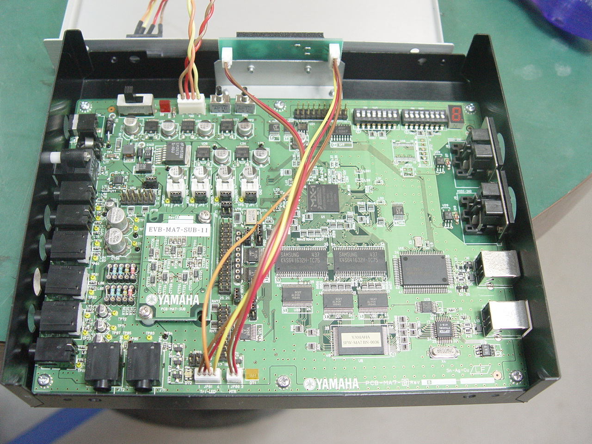
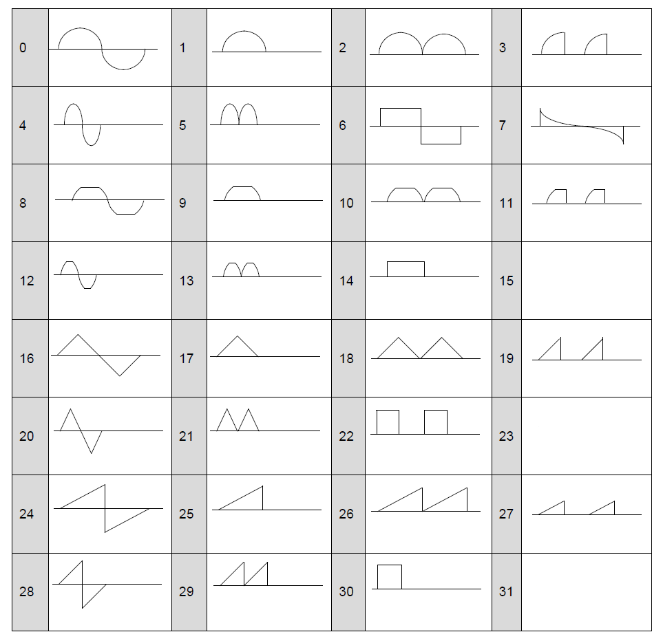

Pictures of MA-7 development board
Taken from this web page.
 |
|---|
| Exterior. |
|  |
|---|
| Internals. |
On this page I will collect all the info I have about Yamaha MA-7 (Mobile Audio 7, YMU786). You can find some info about MA-x series chips here.
Right now I don't have a real chip on my hands, so everything you will see is info collected from MA-7 author tool. It's unclear which features are hardware and which are software. You can also try to decompile DLLs from MCP MA-7.
The chip features multi-channel diverse audio synth capabilities, has internal DACs, op-amps and stereo sound output. Possibly features internal PLL
Yamaha claims up to 128 voices polyphony, but these probably aren't channels in chiptune sense (see below).
Chip has several FM channels. Each channel can be 4-op or 2-op (?) probably, like in OPL3, 2 2-op channels can be combined into 1 4-op channel. Each channel has 2 2-op and 6 4-op algorithms. Some algorithms feature feedback on two operators.
Each FM channel has 32-step panning.
Each FM channel has weird LFO selector, 0-3. It actually controls tremolo speed (AM speed). Each FM operator has a toggle for vibrato and tremolo LFO, and 4-step control over tremolo and vibrato depth, although I could hear only tremolo, vibrato wasn't present.
Each FM channel has lowpass resonant filter with envelope. Resonance is 0-31, envelope has 5 points, for each cutoff control is 0-8184. Envelope has sustain flag and don't react on keypress flag. Envelope rates are 0-31, there are 4 such rates, labeled AR, DR, SR and RR. Also LFO is present, its effect is combined with envelope. LFO has two shapes, triangle and semi-random (labeled as S&H?). LFO has 0-7 frequency and depth controls.
Each operator can be turned on and off (opmask?). Each operator has 32 waveforms to choose from, they are the same as on YMF825:
|  |
|---|
| The circle segment-drawn waveforms are sine waves. |
Three missing waveforms are global RAM-stored waveforms you can specify. MA-7 author tool supports 16-bit PCM wav files and clamps them at 1024 samples length, so that's the format waves use.
Each operator has ADSR envelope with sustain rate. AR, DR, SR and RR are 0-31, sustain level is 0-15. Total level is 0-63. There are flags to enable sustain, to ignore keypress for envelope, to enable vibrato and tremolo. Vibrato and tremolo depth controls are 0-3. Still, I can't hear any vibrato even with the max depth. Each operator has KSR toggle (envelope speed) and 4-step key scaling level strength control (volume scaling). Feedback is 0-7 for those operators that have it. Detune is 0-15.
Each operator can be put in fixed frequency mode where operator's frequency can be independently set.
Chip seems to support 4-bit ADPCM, as well as 8- and 16-bit PCM samples. You can specify "base" sampling frequency, as well as start and end of looped section (so it supports loop point). Volume envelope and filter block are identical with FM channel, as well as vibrato/tremolo/panning controls.
You can choose either MIDI bank sample (stored in chip ROM?? or loaded from phone memory), custom sample or noise for playback. Length of sample cannot exceed 16386 bytes. Seems that chip has around 16 KiB of RAM for samples.
Chip has some speech synth capabilities. HV editor (HV probably stands for human voice) features unknown functionality point envelope (called "formant") and the array of 8 control blocks. Each block has the following settings: volume, frequency offset (signed, in cents), waveform (the same as in FM channel editor), 0-3 LFO speed, AM and vibrato toggles and 0-3 depth controls. There's also one "Prosodic Volume Enable" (sic!) checkbox in the editor.
In the next editor you can specify what vocaloid says, using Japanese syllables and special symbols that control pitch, volume and "expression" (probably some filters?). The playback of speech synth script is probably handled in software since from recording register updates are at around 60 Hz rate.
Now it is unclear what's the speech synth implementation is. Waveform looks like it's CSM mode but for 8 operators. It is unclear if there are some dedicated hardware channels used for that or 4 2-op channels are put into some special mode to output CSM fundamental frequency + 8 of their own frequencies. There aren't any "noisy" syllables so probably no modulation is happening.
That's why it's unclear what Yamaha tried to say with "up to 128 voices". Since each FM operator has its own frequency control in fixed mode, PR/marketing team could just count FM operators, add in PCM/ADPCM channels and call it a 128 voices polyphony.
If chip really has 128 voices polyphony, then how? For example, it's known that MA-3 in 2-op mode has 32 FM channels. This leaves 96 channels. Let's assume that there are 32 more channels for PCM/ADPCM. You still have 64 channels for... whatever. So I think that it either has more FM channels, some of which are only for speech synth, or Yamaha lied.
Each channel can have 2 DSP effects. In MA-7 author tool they are called "SFX1" and "SFX2". SFX1 takes mono input and produces stereo output. SFX2 takes stereo input, emits stereo output. This output is summed with SFX1 output (left and right channel separately), as well as both outputs are added to SFX1 input.
MA-7 author tool allows to choose one of the presets for SFX1 and SFX2 and modify some of their parameters. Parameters count and limits differ from preset to preset, apart from maybe LP/HP filters cutoff in several SFX1 presets.
SFX1 presets: room reverb, plate(?), karaoke(?), delay. You can also select "no effect".
SFX2 presets: chorus, celeste, flanger, tremolo, ringmod, auto-pan, phaser, distortion, overdrive, amplifier simulator, stereo 3-band equalizer, mono 2-band equalizer, 2-band equalizer, auto-wah, pitch change, compressor, voice cancel, ensemble detune, ambience. You can also select "no effect".